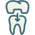
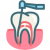
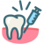

Exams/Cleanings Details
Exams
We aim to be the premier dental office in the Irving & Las Colinas area. Let us be your partner in maintaining a healthy & radiant smile. We’ll start with taking a minimum number of xrays to ensure everything is healthy.
We’ll check for signs of oral cancer and complete a full exam. We’ll make sure there aren’t any cavities, and that your gum and bone health looks good before getting your teeth cleaned and polished!
Cleanings
We’ll remove the buildup (Tarter & Calculus) off of your teeth that causes problems like gingivitis and bad breath. During the cleaning we also remove all of the stains that accumulate and polish the teeth to make them bright and white!
Best Age To Start Seeing A Dentist
Everyone should be getting an exam at least twice a year, even infants! It’s important to monitor tooth development and ensure infants and kids are on track with their growth. Issues with tooth development can be an early indicator to more serious problems that can be caught early with something as simple as a dental exam
Invisalign Details
Invisalign
Dreaming of straighter smile? Don’t want metal braces? Invisalign can get you the dream smile you’ve always wanted! Our aim with Invisalign is to not only give you a beautiful smile but to correct bite issues that lead to premature wear and chipping of the teeth.
Don’t settle for any other clear aligner system. Invisalign aligners move the teeth with precision, predictability, and speed that other systems aren’t able to match.
How Do They Work?
You place the clear trays in your mouth, they straighten your teeth while you work, play, and sleep. Only taking them out to eat, and when you brush & floss your teeth. Every 1–2 weeks you’ll switch into your next set of trays. Over time you’ll have straight teeth with a beautiful smile!
Should I Whiten Before Or After Invisalign?
Neither! The great thing about Invisalign is you can actually whiten during the Invisalign treatment! Since the Invisalign trays are extremely durable you can place the whitening gel directly into them, allowing you to whiten while you straighten your teeth! No need for separate trays.

Crowns & Bridges
When teeth need a little more attention than what a filling can provide.
Crowns & Bridges Details
Crowns
When cavities destroy large portions of the tooth a filling won’t cut it long-term. Crowns are the answer when the tooth has been more severely compromised. Crowns can be made from various materials, from base metals to gold to ceramics.
Crowns can also be a mix of materials, such as metal underneath with ceramic on top. The crowns we do here are all ceramic based crowns. They are strong, tooth colored, have excellent esthetics, and don’t chip like the older materials.
Upgrades
We only offer our patients the best options with the best materials. We never charge an upgrade fee, and we never charge a lab fee.
Materials
The primary materials we use to make our ceramic crowns are Zirconia or eMax. They both offer exceptional esthetics with strength and longevity. eMax crowns are the best in terms of esthetic so we use them for crowns on teeth towards the front of the mouth, whereas the Zirconia crowns are extremely strong so they’re used in the back where most of the chewing forces are.
Fillings Details
Fillings
When cavities form they break down the natural tooth. Our goal is to stop this breakdown process by removing the infected tooth structure and replacing it with a new material, the filling.
Types Of Filling Materials
There are two types of filling materials, the older metal amalgam fillings and the newer tooth colored composite fillings. All of the fillings we place at Refined Dentistry are composite fillings.
How Long Do They Last
Fillings typically last anywhere from 2 to 8 years. Some factors that affect how long they last include how large the filling is, the filling type, the location of the filling, and how well it’s maintained.
Dentures Details
Dentures
Dentures help our patients get their smiles back on track. They can replace anywhere from a few teeth to all of them. Here at Refined Dentistry we’re proud to offer our Irving and Las Colinas patients this option to help restore their confidence, smile, and ability to eat!
Partial Dentures
Partial dentures help fill in the spaces when you have a couple missing teeth. They snap into place around your existing teeth and give you back your ability to chew. Partial dentures can be made with a metal base to add durability and strength. They can also be all acrylic or flexible for patients who want the most esthetic option.
Complete Denture
When all of the teeth are missing, complete dentures are the go-to option. Complete dentures can function to give you back your smile and help you eat food a little easier. The shape, color, size, and fit are customized to you. They can also be designed to be held in by implants. These implant dentures can be permanently fixed in place, or removable by the patient. Come see us and find out why the Las Colinas community trusts us with their dental care.
Extractions Details
Extractions
Having a tooth that’s infected or causing pain is the last thing anyone needs to stress about. Our goal is to save teeth whenever possible, but for the rare situation where it needs to come out we’ll do it painlessly. Everything from the triple beveled needle and the specific anesthesia we use, to the TV’s and relaxing music help create an atmosphere for a pain-free experience.
Anxious Patients
Dr. Patel is certified in level one sedation, allowing him to offer a better solution than Nitrous gas to take the edge off.
Planning For The Future
An extraction doesn’t mean a missing tooth forever. We offer options such as implants to help get you back to healthy. During the extraction we’ll place a bone graft to ensure a solid foundation for the future implant.
Post-Op Questions
Every patient has different needs after an extraction, there is no one-size fits all. That’s why every patient who undergoes an extraction gets Dr Patel’s cell number so they can call or text questions any time.
Implants Details
Implants
Implants are one of the most sought after treatments in dentistry, and we’re proud to offer them as an option for our Irving and Las Colinas community. With implants we can restore your smile, confidence, and ability to eat.
Do Implants Hurt?
This is one of the most common concerns about implants. The great news is implants don’t hurt! The entire procedure typically takes less than an hour from when you walk in to the clinic to when you walk out. For most cases patients are able to return to work the next day.
Recovery Time
Implant recovery times vary based on patients age, health, and location of the implant. Implants on the bottom heal quicker due to more dense bone, around 3 months. Implants on the upper take a little longer, typically 4 to 6 months. After the implant fully heals and gets locked into the mouth, it’s ready to be restored with a tooth! No recovery time is needed after placing the tooth on the implant!
Family Dentistry Details
We love being the go-to family dentist for our Irving & Las Colinas communities. We pride ourselves in being able to care for all of our patients under one roof, regardless of their age. It’s especially important for kids to get their regular checkups because of their diet and difficulties with brushing properly. When cavities are caught early on during their 6 month visits they’re much easier to fix. It also gets them used to going to the dentist and forming good habits that will last them into adulthood.

Root Canals
If your tooth's hurting we'll get rid of the infection and get you out of pain.
Root Canals Details
Root Canals
When our patients in the Irving & Las Colinas community has dental pain, we’re here for them. Whether it’s 6:00 AM on Saturday morning or 11:00 PM on Wednesday night you will always be able to reach Dr. Patel’s cell.
We’ll get you in same day to get you out of pain. Oftentimes a root canal is required. New techniques and materials allow us to deliver exceptional and quick results, and most importantly a painless experience from start to finish. Recovery is quick, pain relief is often within hours.
PostOp Care
The toothache will feel significantly better within hours, but there will be discomfort that over-the-counter Advil will be able to take care of. It’s important to take it easy and avoid chewing hard foods until the final crown can be placed on the tooth.
Cosmetic Dentistry
Whether you're looking to improve your smile or to get a full Hollywood smile makeover, we'll tailor treatment specific to your goals.
Cosmetic Dentistry Details
Invisalign
Looking for straighter teeth? We offer Invisalign, the best clear aligner system available to move your teeth with precision and speed. Many treatments take only a few months. The best part about the aligners is that you can whiten your teeth with the same trays you use to straighten them! Visit our Las Colinas office to see if you’re a good candidate!
Veneers
With veneers we get you to a perfect Hollywood smile. We offer eMax veneers, a glass-ceramic material that’s thinner, stronger, and lighter than traditional veneers. Another advantage over traditional porcalain veneers is the eMax veneers are slightly transparent, allowing the final product to have a much more natural appearance.
We will work together to choose the shape and color of the veneers that best suites your final goals. Whether you’re looking for an improvement or a transformation, we’ll get you there!
Whitening
The most sought-after procedure, teeth whitening. We have many options available to get your teeth vibrant and white. If you’re on-the-go we offer take home trays that you can use anytime and as often as you like to get to the shade you want. People typically see results 4 to 6 shades lighter. If you’re looking for faster results we offer in-office whitening, instant results that will take you 4 shades lighter in an hour.

Deep Cleanings
When your gums need a little extra care,
we'll get rid of the infection and get them back to healthy.
Deep Cleaning Details
Deep Cleaning
Calculus and tarter can build up underneath the gums. This buildup causes gingivitis. As the inflammation spreads and reaches the bone around the teeth, it begins to erode the bone away, a condition known as periodontitis. If the condition isn’t fixed, it leads to the teeth becoming more and more loose until they eventually fall out. The great news is that this process can be stopped with a deep cleaning! We’ll numb the gums to make the process comfortable, and use our ultrasonic instruments to remove the buildup on and under the gums. We’ll take before and after xrays to make sure all of the buildup was removed, and we’ll take full pocket depth chartings to make sure we see continual improvement in your health.
Can I Do The Whole Mouth At Once?
While it’s possible to take care of the entire mouth in one session it’s not advisable. The deep cleaning takes anywhere from 30 minutes to an hour per quadrant, sitting in a dental chair for over 2 hours can be extremely taxing. We also numb the portions we’re cleaning to make the visit comfortable. Having the entire mouth numb after the appointment makes eating and drinking extremely difficult. We strongly recommend completing 2 quadrants per visit, but will always accommodate our patients with their schedules and preferences.
Can I Get A Routine Cleaning Instead?
A routine cleaning will remove the buildup that’s on top of the gums. To remove the buildup under the gums that causes the bone to erode away you have to do a deep cleaning. Doing a routine cleaning instead of a deep cleaning would be the equivalent of repainting a car to make it look new without doing any work under the hood.